cograph is a modern R package for network visualization. It renders publication-ready network plots from adjacency matrices, edge lists, igraph, statnet network, qgraph, or tna objects using a pipe-friendly API with full control over nodes, edges, layouts, and themes.
Key features:
-
Base R and grid rendering via
splot()andsoplot() -
Pipe-friendly API:
cograph() |> sn_nodes() |> sn_edges() |> sn_theme() - 12+ node shapes including pie charts and donut rings
- 7 built-in themes and multiple color palettes
- Confidence interval underlays, edge label templates, weight scaling
-
Converters for
tnaandqgraphobjects
Installation
# Install from CRAN (when available)
install.packages("cograph")
# Or install the development version from GitHub
# install.packages("devtools")
#devtools::install_github("sonsoleslp/cograph")Quick Start
library(cograph)
#> cograph: Modern Network Visualization for R
#> Version: 1.5.2
#> Type ?cograph for help
# 10-node directed transition matrix (TNA-style)
set.seed(42)
states <- c("Explore", "Plan", "Monitor", "Evaluate", "Adapt",
"Reflect", "Regulate", "Execute", "Collaborate", "Review")
mat <- matrix(runif(100, 0, 0.3), nrow = 10, dimnames = list(states, states))
diag(mat) <- 0
mat <- mat / rowSums(mat) # row-normalize
# Basic plot
splot(mat)
# Pipe-chain style
cograph(mat, layout = "spring") |>
sn_nodes(size = 0.07, fill = "steelblue", shape = "circle") |>
sn_edges(width = "weight", color = "weight") |>
sn_theme("minimal") |>
sn_render()
Input Formats
cograph accepts six input types:

# 2. Edge list (data.frame with from, to, and optional weight)
edges <- data.frame(
from = c("A", "A", "B"),
to = c("B", "C", "C"),
weight = c(0.8, 0.5, 0.3)
)
splot(edges)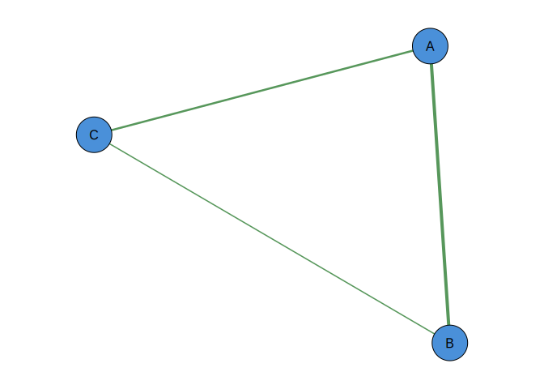
# 3. igraph object
library(igraph)
#>
#> Attaching package: 'igraph'
#> The following object is masked from 'package:cograph':
#>
#> is_directed
#> The following objects are masked from 'package:stats':
#>
#> decompose, spectrum
#> The following object is masked from 'package:base':
#>
#> union
g <- make_ring(10)
splot(g)
# 4. statnet network object
library(network)
#>
#> 'network' 1.19.0 (2024-12-08), part of the Statnet Project
#> * 'news(package="network")' for changes since last version
#> * 'citation("network")' for citation information
#> * 'https://statnet.org' for help, support, and other information
#>
#> Attaching package: 'network'
#> The following objects are masked from 'package:igraph':
#>
#> %c%, %s%, add.edges, add.vertices, delete.edges, delete.vertices,
#> get.edge.attribute, get.edges, get.vertex.attribute, is.bipartite,
#> is.directed, list.edge.attributes, list.vertex.attributes,
#> set.edge.attribute, set.vertex.attribute
net <- network.initialize(5, directed = FALSE)
net[1,2] <- net[2,3] <- net[3,4] <- net[4,5] <- net[1,5] <- 1
splot(net)
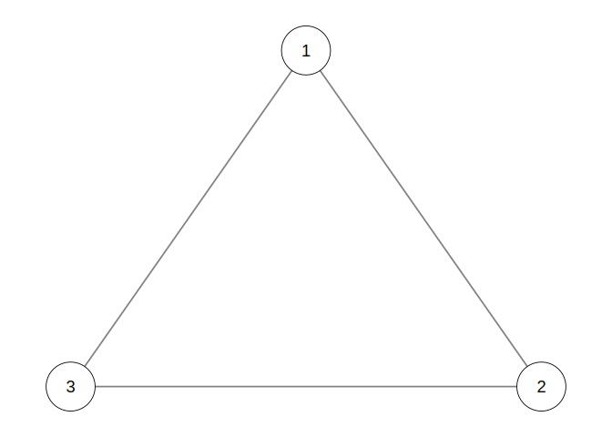
splot(q)
# 6. tna object (transition network analysis)
library(tna)
#> 'tna' package version 1.1.0
#> ------------------------------------------------------
#> Tikka, S., López-Pernas, S., and Saqr, M. (2025).
#> tna: An R Package for Transition Network Analysis.
#> Applied Psychological Measurement.
#> https://doi.org/10.1177/01466216251348840
#> ------------------------------------------------------
#> Please type 'citation("tna")' for more citation information.
#> See the package website at https://sonsoles.me/tna/
#>
#> Attaching package: 'tna'
#> The following objects are masked from 'package:igraph':
#>
#> cliques, communities, compare
tna_obj <- tna(group_regulation)
splot(tna_obj)
splot() vs soplot()
splot() uses base R graphics; soplot() uses grid graphics. Both accept the same parameters.
# Base R (recommended for knitting and file output)
splot(mat, layout = "circle", theme = "classic")
# Grid-based (useful for sn_ggplot())
soplot(mat, layout = "circle", theme = "classic")
Layouts
# Built-in layouts
splot(mat, layout = "circle")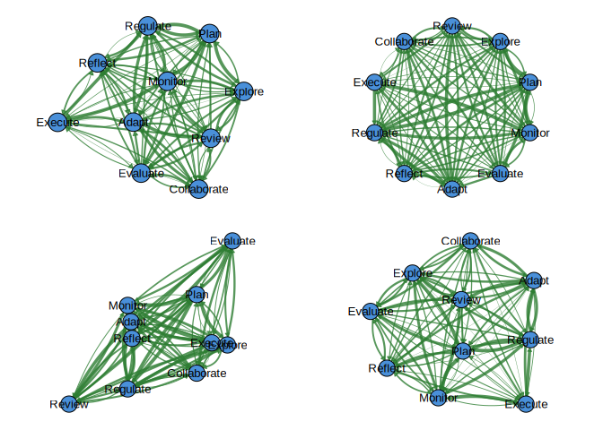
splot(mat, layout = "spring")
# Group-based layout
groups <- rep(1:3, length.out = 10)
cograph(mat) |> sn_layout("groups", groups = groups) |> sn_render()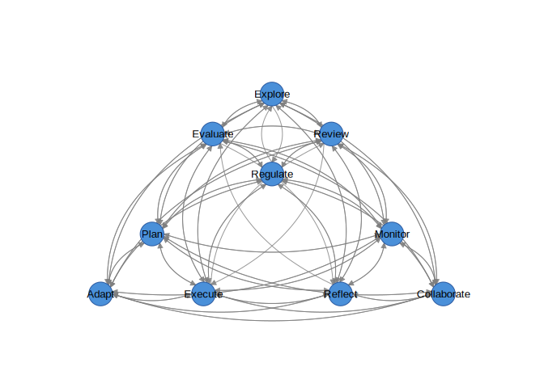
# igraph layout codes
splot(mat, layout = "kk") # Kamada-Kawai
splot(mat, layout = "fr") # Fruchterman-Reingold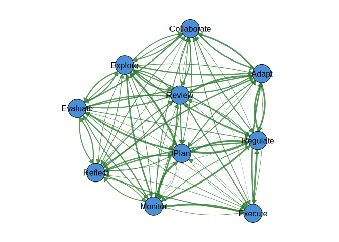
splot(mat, layout = "mds") # Multidimensional scaling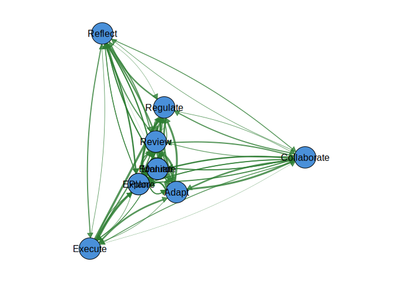
# Custom coordinates
coords <- matrix(runif(20), ncol = 2)
cograph(mat) |> sn_layout(coords) |> sn_render()
Node Shapes
All available shapes:
# Shapes: circle, square, triangle, diamond, pentagon, hexagon,
# ellipse, heart, star, cross, rectangle
# One shape per node
shapes <- c("circle", "square", "triangle", "diamond", "pentagon",
"hexagon", "ellipse", "heart", "star", "cross")
splot(mat, node_shape = shapes, node_fill = palette_rainbow(10), layout = "circle")
Node Aesthetics
splot(mat,
node_size = seq(0.04, 0.08, length.out = 10),
node_fill = palette_pastel(10),
node_border_color = "gray30",
node_border_width = 2,
node_alpha = 0.85,
label_size = 9,
label_color = "black",
label_position = "center"
)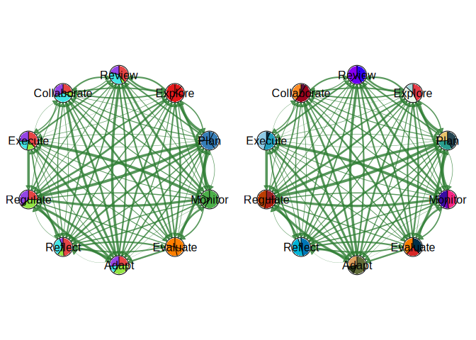
Edge Aesthetics
# Width, color, and style
splot(mat,
positive_color = "#2E7D32",
negative_color = "#C62828",
edge_style = "solid",
curvature = 0.2,
arrow_size = 0.015
)
#> Warning: 'positive_color' is deprecated, use 'edge_positive_color' instead.
#> Warning: 'negative_color' is deprecated, use 'edge_negative_color' instead.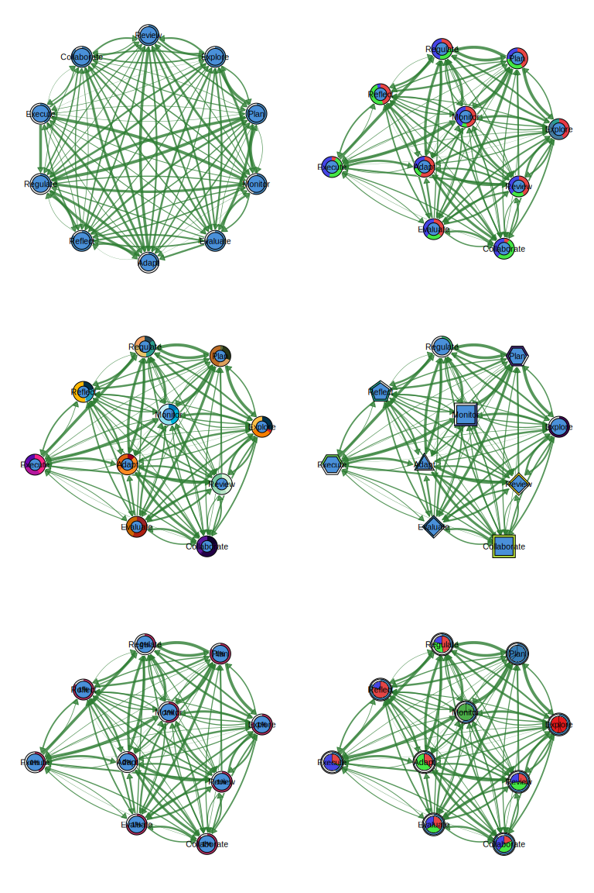
Confidence Intervals and P-Values
cograph supports statistical edge visualization with CI underlays and significance notation.
# Confidence interval underlays (uncertainty bands)
splot(mat,
edge_ci = runif(sum(mat > 0), 0.05, 0.2),
edge_ci_alpha = 0.15,
edge_ci_scale = 2.5,
edge_ci_style = 1 # 1=solid, 2=dashed, 3=dotted
)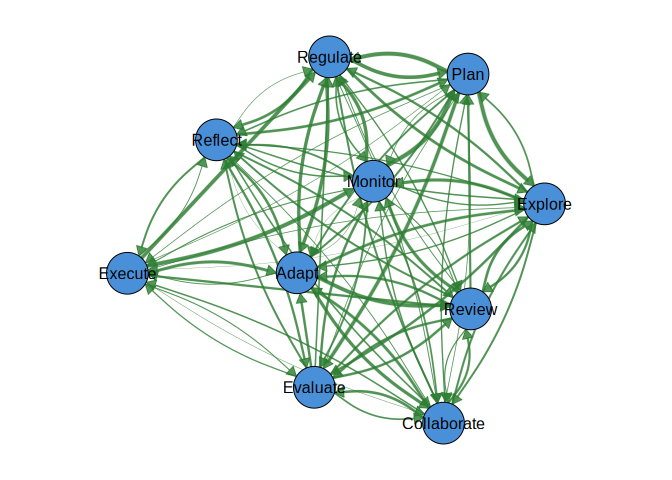
# P-values with significance stars (*** p<0.001, ** p<0.01, * p<0.05)
splot(mat,
edge_labels = TRUE,
edge_label_p = runif(sum(mat > 0), 0, 0.1),
edge_label_stars = TRUE,
edge_label_size = 0.5
)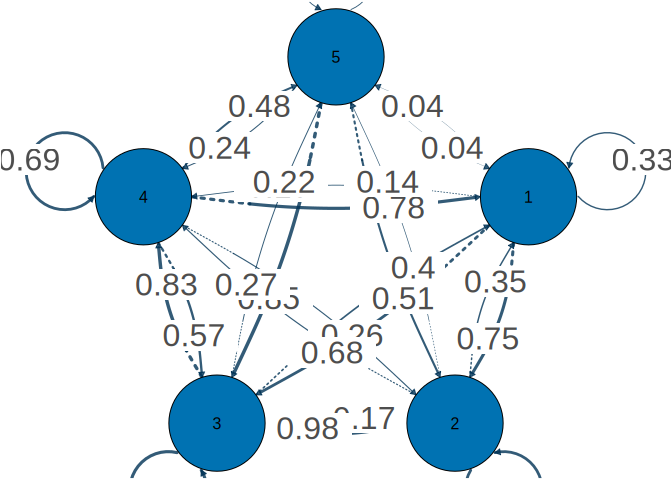
# Custom template with CI bounds
splot(mat,
edge_label_template = "{est}{stars}\n[{low}, {up}]",
edge_ci_lower = runif(sum(mat > 0), 0.1, 0.3),
edge_ci_upper = runif(sum(mat > 0), 0.4, 0.6),
edge_label_p = runif(sum(mat > 0), 0, 0.1),
edge_label_stars = TRUE,
edge_label_digits = 2,
edge_label_size = 0.45
)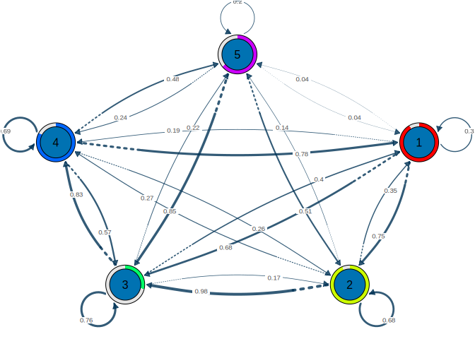
# Publication-ready with CI underlays and labels
splot(mat,
edge_ci = runif(sum(mat > 0), 0.05, 0.2),
edge_ci_alpha = 0.12,
edge_label_template = "{est}{stars}",
edge_label_p = runif(sum(mat > 0), 0, 0.1),
edge_label_stars = TRUE,
edge_label_size = 0.5,
theme = "minimal"
)
Template placeholders: {est}, {low}, {up}, {range}, {p}, stars
Pie Chart Nodes
set.seed(1)
# Each node gets a vector of pie segment values
pie_vals <- lapply(1:10, function(i) runif(4))
pie_cols <- c("#E41A1C", "#377EB8", "#4DAF4A", "#FF7F00")
splot(mat,
node_shape = "pie",
pie_values = pie_vals,
pie_colors = pie_cols,
layout = "circle"
)
# Per-node color palettes
pie_cols_multi <- list(
c("#E63946", "#F1FAEE", "#A8DADC"),
c("#264653", "#2A9D8F", "#E9C46A"),
c("#F72585", "#7209B7", "#3A0CA3"),
c("#003049", "#D62828", "#F77F00"),
c("#606C38", "#283618", "#DDA15E"),
c("#0077B6", "#00B4D8", "#90E0EF"),
c("#9B2226", "#AE2012", "#BB3E03"),
c("#023047", "#219EBC", "#8ECAE6"),
c("#5F0F40", "#9A031E", "#FB8B24"),
c("#2D00F7", "#6A00F4", "#8900F2")
)
splot(mat,
node_shape = "pie",
pie_values = lapply(1:10, function(i) runif(3)),
pie_colors = pie_cols_multi,
node_size = 6,
layout = "circle"
)
Donut Nodes
# Simple donut: fill proportion per node (0 to 1)
fills <- runif(10, 0.3, 0.95)
splot(mat,
node_shape = "donut",
donut_fill = fills,
donut_color = "steelblue",
layout = "circle"
)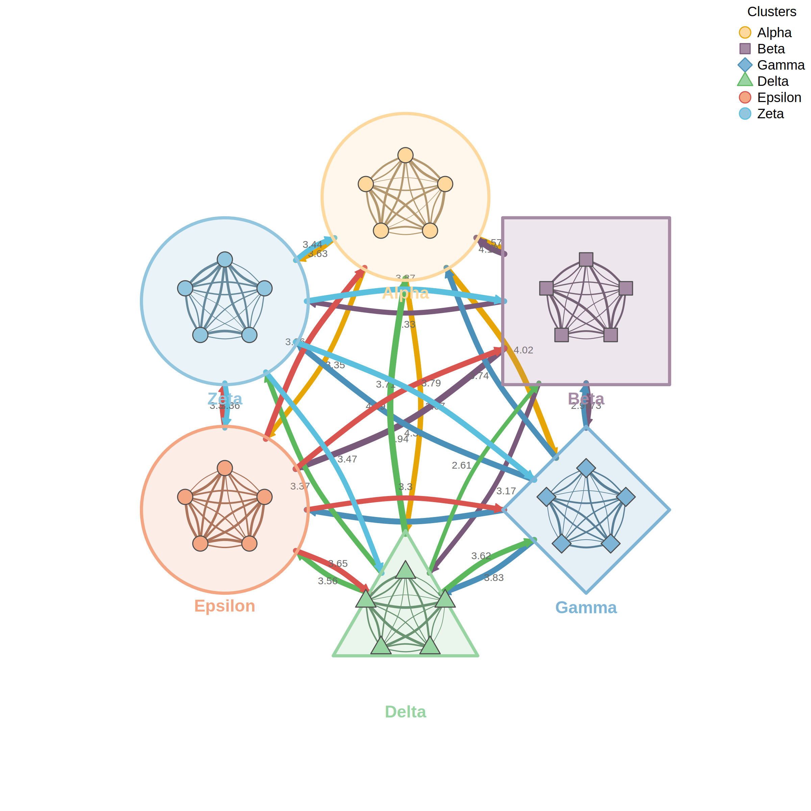
# Segmented donuts with multiple colors
donut_vals <- lapply(1:10, function(i) runif(3))
donut_cols <- list(c("#E63946", "#457B9D", "#2A9D8F"))
splot(mat,
donut_values = donut_vals,
donut_colors = donut_cols,
donut_inner_ratio = 0.6,
node_size = 6
)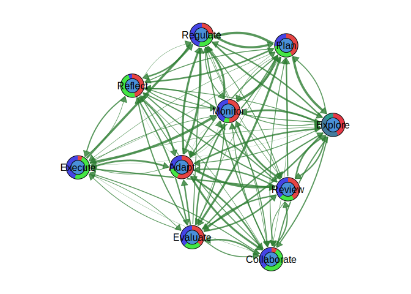
# Per-node donut color palettes
donut_cols_multi <- list(
c("#003049", "#D62828", "#F77F00", "#FCBF49"),
c("#606C38", "#283618", "#DDA15E", "#BC6C25"),
c("#0077B6", "#00B4D8", "#90E0EF", "#CAF0F8"),
c("#9B2226", "#AE2012", "#BB3E03", "#CA6702"),
c("#5F0F40", "#9A031E", "#FB8B24", "#E36414"),
c("#023047", "#219EBC", "#8ECAE6", "#FFB703"),
c("#264653", "#2A9D8F", "#E9C46A", "#F4A261"),
c("#F72585", "#B5179E", "#7209B7", "#560BAD"),
c("#10002B", "#240046", "#3C096C", "#5A189A"),
c("#D8F3DC", "#B7E4C7", "#95D5B2", "#74C69D")
)
splot(mat,
donut_values = lapply(1:10, function(i) runif(4)),
donut_colors = donut_cols_multi,
donut_inner_ratio = 0.55,
node_size = 6
)
# Polygon donut shapes
splot(mat,
node_shape = "donut",
donut_fill = fills,
donut_shape = c("circle", "hexagon", "square", "diamond", "triangle",
"pentagon", "circle", "hexagon", "square", "diamond"),
donut_color = palette_viridis(10)
)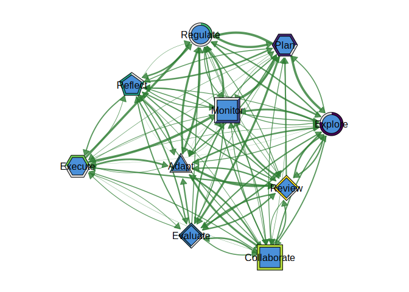
# Show value in center
splot(mat,
node_shape = "donut",
donut_fill = fills,
donut_show_value = TRUE,
donut_value_digits = 0,
donut_value_suffix = "%"
)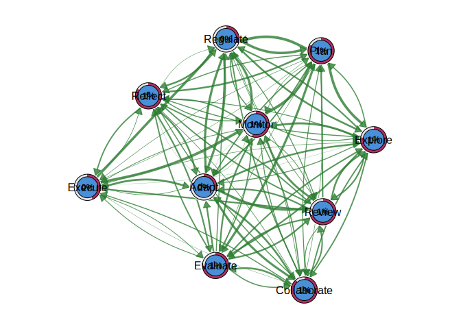
# Donut + Pie combo: outer donut ring with inner pie segments
splot(mat,
node_shape = "donut",
donut_fill = fills,
donut_color = "steelblue",
pie_values = lapply(1:10, function(i) runif(3)),
pie_colors = c("#E41A1C", "#377EB8", "#4DAF4A")
)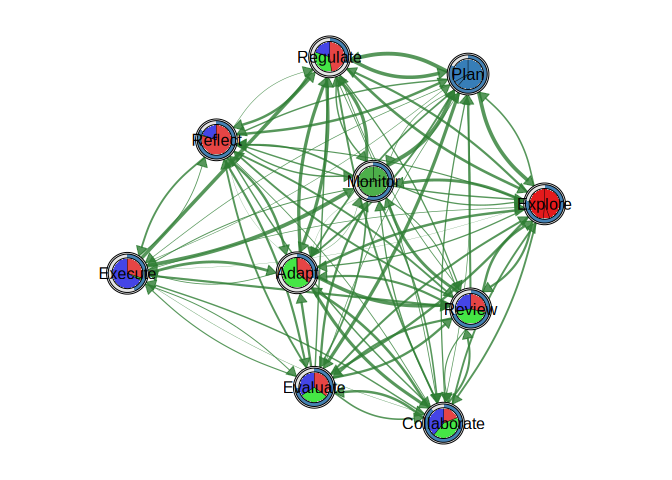
# Double donut: two concentric rings
splot(mat,
node_shape = "donut",
donut_fill = fills,
donut_color = "steelblue",
donut2_values = runif(10, 0.2, 0.8),
donut2_colors = "coral"
)
Weight Handling
# Round weights to 1 digit
splot(mat, weight_digits = 1)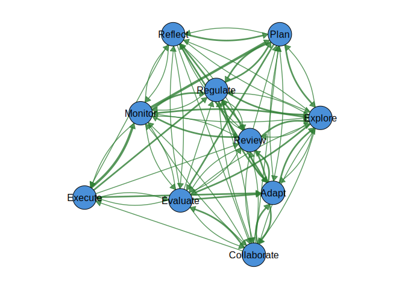
# Filter edges below threshold
splot(mat, threshold = 0.1)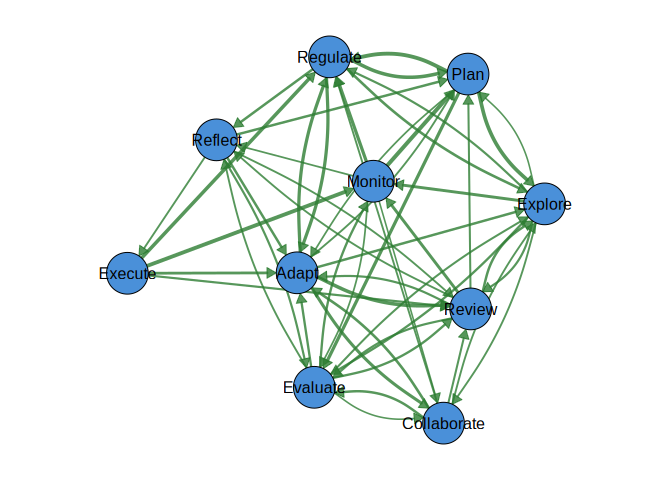
# Set maximum for scaling
splot(mat, maximum = 1.0)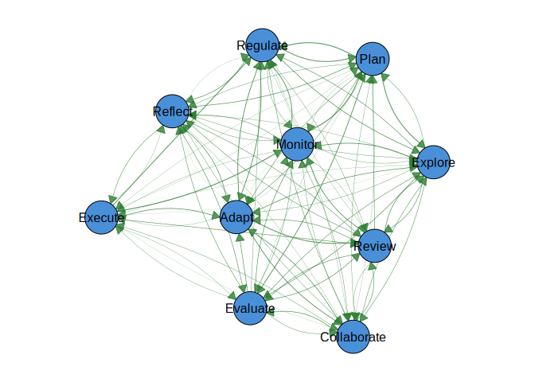
# Disable two-tier cutoff
splot(mat, cut = 0)
#> Warning: 'cut' is deprecated, use 'edge_cutoff' instead.
# Logarithmic edge scaling
splot(mat, edge_scale_mode = "log")
Themes
Seven built-in themes:
splot(mat, theme = "classic")
splot(mat, theme = "dark")
splot(mat, theme = "colorblind")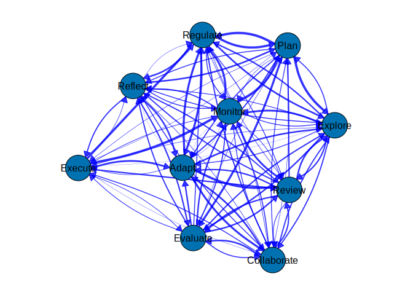
splot(mat, theme = "gray")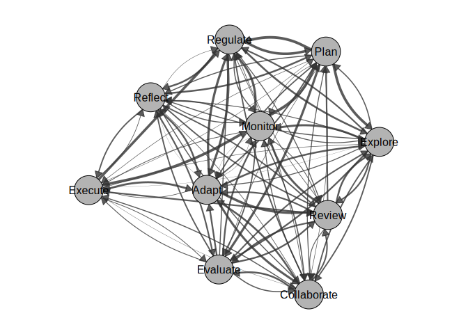
splot(mat, theme = "minimal")
splot(mat, theme = "viridis")
splot(mat, theme = "nature")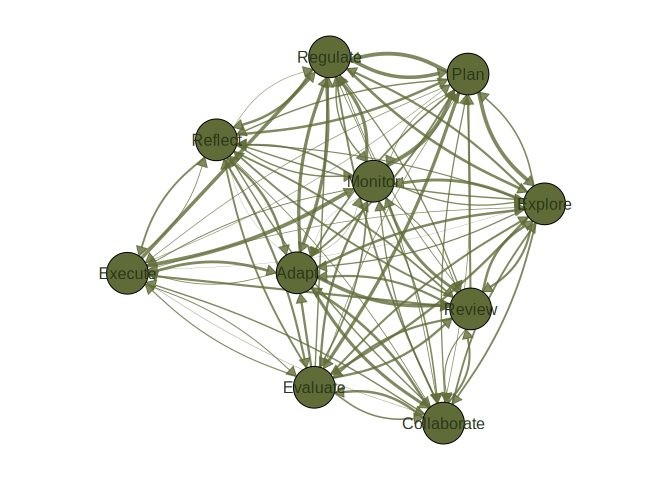
Color Palettes
splot(mat, node_fill = palette_rainbow(10))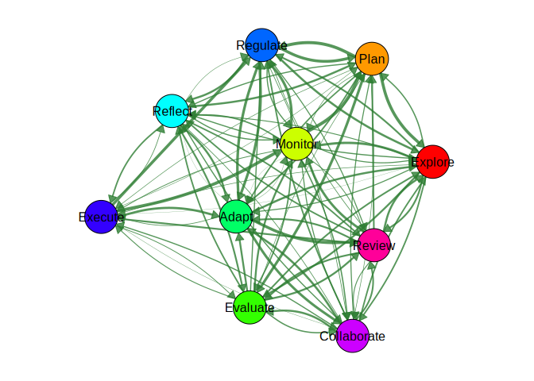
splot(mat, node_fill = palette_colorblind(10))
splot(mat, node_fill = palette_pastel(10))
splot(mat, node_fill = palette_viridis(10))
splot(mat, node_fill = palette_blues(10))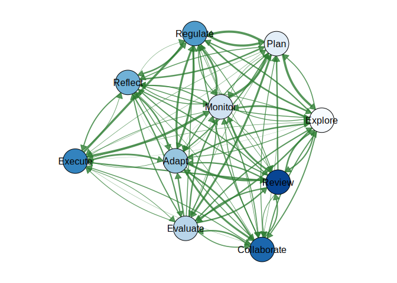
splot(mat, node_fill = palette_reds(10))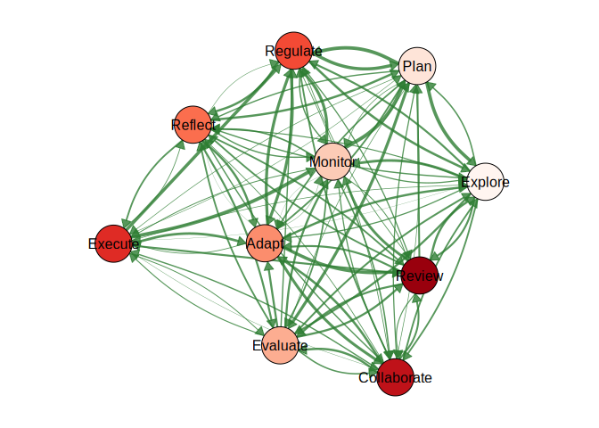
splot(mat, node_fill = palette_diverging(10))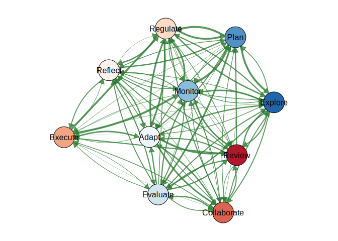
Converters: from_tna() and from_qgraph()
# Convert a tna object (requires tna package)
library(tna)
tna_obj <- tna(group_regulation)
from_tna(tna_obj)
# Override parameters during conversion
from_tna(tna_obj, theme = "dark", layout = "circle")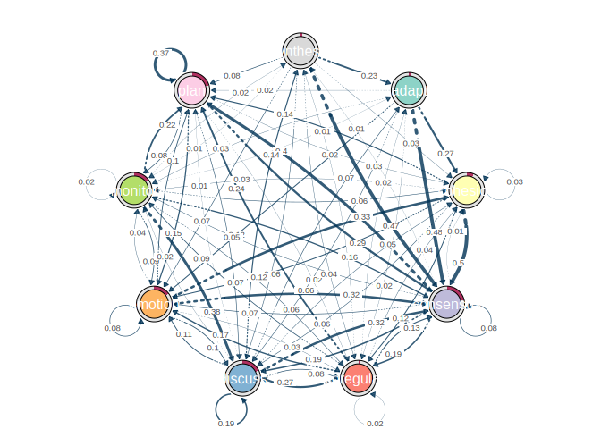
ggplot2 Integration
library(ggplot2)
#>
#> Attaching package: 'ggplot2'
#> The following object is masked from 'package:cograph':
#>
#> get_theme
p <- cograph(mat) |>
sn_nodes(fill = "steelblue") |>
sn_theme("minimal") |>
sn_ggplot()
p + labs(title = "My Network") +
theme(plot.title = element_text(hjust = 0.5))
Function Reference
| Function | Purpose |
|---|---|
cograph() |
Create network from matrix, edge list, igraph, network, qgraph, or tna |
splot() |
Render with base R graphics |
soplot() |
Render with grid graphics |
sn_nodes() |
Set node aesthetics |
sn_edges() |
Set edge aesthetics |
sn_layout() |
Apply layout algorithm |
sn_theme() |
Apply visual theme |
sn_palette() |
Apply color palette |
sn_render() |
Render to current device |
sn_ggplot() |
Convert to ggplot2 object |
sn_save() |
Save to file |
from_tna() |
Convert tna object |
from_qgraph() |
Convert qgraph object |
License
MIT License. See LICENSE for details.